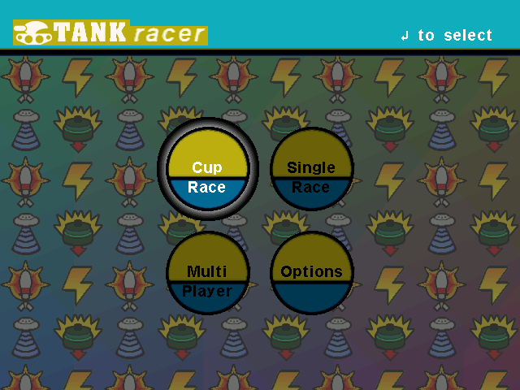
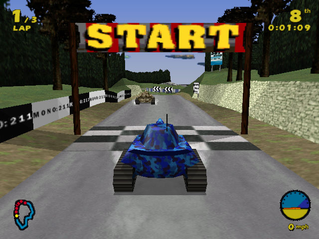

名稱：瘋狂坦克 (Tank Racer，英文版) 簡介：Glass Ghost 1999年出品的坦克競速遊戲，由Grolier代理發行 [待補]。

保護：光碟，破解碼（放入光碟才有背景音樂）： tankrace.exe C3 33 C0 83 C4 54 C3 90 90 90 90 -- B8 01 00 00 00 83 C4 54 C3 -- 備註：進入主畫面若無背景音樂，或無法通過光碟檢驗，請更新至1.01版。 備註：VirtualBox需搭配WineD3D，但仍有貼圖問題，VMware+WineD3D則速度偏慢，建議使用 Win64+dgVoodoo2。 檔案：Tank_Racer_Patch_1.01.rar = 1.01更新檔